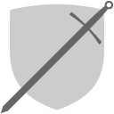
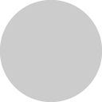
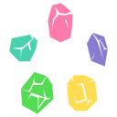

West and South-West of Hemmderall and Catal, Esmorzar is one of the 4 continents of Ourobos.
This information is meant to supplement what your character is able to, or should generally know about Esmorzar.If your PC's history should provide more detail about a region, let me know.
Regions
Esmorzar is split into 5(6) regions of land.
- The major race in this continent is human.
-
Endling
The most populated part in Esmorzar. Teitrasyl resides here in the Godsend, Esmorzar's Major city, previous home of the Pantheon
-
Shatterlands
The Shatterlands is covered in deserts and rock and many islands help extend this region.
The Scorchedwastes is a section of map filled with constantly eroding and burning Earth. (It's pretty hot) -
Leylands
The most magical region in Esmorzar, the Leylands, has become home to many elf and the like. This region also has the most mage towers compared to the others.
This region has a large wall of mountains bordering itself from the Shatterlands' Scorchedwastes and parts of the Endling Kingdom.
The Leylands is majorly held by elfkin in Myeiwar and other forested sections of the Leylands -
The Drifting Cape
Cape Drifting is a cold region known for its mining colonies.
-
The Crawling Kingdom
Nothing special about this region. It is diverse with no true speciality.
It is home to Waverwen (Or the Serpent's Head), a reclusive district of land. -
Greedy
Greedy is a sub-region close to Endling, and was once used as a spiritual high-ground. It's now lowly populated.
Religion
The larger faiths in Esmorzar target these old gods and their offspring known as the pantheon.
| Symbol | Deity | Alignment | Domain |
|---|---|---|---|
| Albotas, goddess of the sky | NG | Light | |
| Bahamut, dragon god of good | LG | Life, War | |
|  | Dol Dornn, goddess of war | N | War, Tempest |
| Gigas, god of war and strength | CE | War, Nature | |
| Gnemu, god of wisdom and space | N | Life, Death | |
| Ramuh, god of justice | N | Tempest, Light | |
| Sepul, goddess of time and fortitude | NE | Knowledge | |
 |
Tiamat, Dragon god of evil | LE | Trickery |
| Symbol | Deity | Alignment | Domain |
|---|---|---|---|
|  | Brimhelm, diety of shields and protection | N | War |
| Chauntea, diety of agriculture | NG | Life | |
| Egi, diety of deception and misfortune | LG | Light, Nature | |
| Eni, diety of luck and beauty | CE | Trickery, Nature | |
| Fafnir, diety of wealth and prosperity | LE | Knowledge, Trickery | |
|  | Hestero, diety of trade and craft | N | Knowledge |
 |
Kelemvor, diety of the dead | N | Death |
| Moradin, diety of creation | NE | Death | |
| Morgion, diety of disease and secrecy | LG | Knowledge | |
| Selune, diety of the moon | N | Knowledge, Life | |
| Sylph, diety of courage and self-sacrifice | NG | Tempest, Life | |
| Tymora, diety of good fortune | CG | Trickery | |
| Zeboim, diety of the sea and storms | CE | Tempest |
Serpents Head Campaign
This campaign revolves around Waverwen, known as the Serpents head. It sits on the eastern board of the Esmorzar continent in the Crawling Kingdom.
In the current age, Waverwen is run by an oligarchy, 7 pillars known as the 7 Wings of Waverwen. These people have lead wWavewen in the past few years securing it into one of the most controlled regions in Esmorzar
Introduction and setting up for the campaign
I mean, it'd be helpful to know your characters history coming into this campaign. I will/might/could insert some of your characters history as plot points, whether you've wrote about them or not, so care.
Keep into mind I will be tracking your characters pathways (individually) throughout the campaign on this map (at the end of each session)
Why is my character in the Crawling Kingdom?
For the story's introduction, the characters will be in Yiva, making their way to Waverwen by horse caravan with a few other civilians and migrants. The caravan travelled from the Eastern way of the Kings Road.
Do I have a hidden history?
I may or may not supply your character with a hidden history. A motive or personality trait that could be important to driving the story forward.